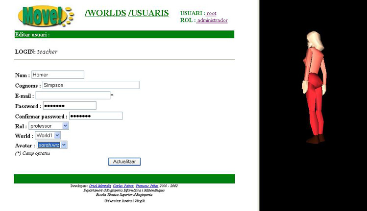
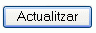

4.2 Modificar les dades d'un usuari existent
En la pantalla d'edici� de les propietats d'un usuari ens trobem el seg�ent:

A la part esquerra podem veure el perfil de l'usuari,
- Login
- Nom
- Cognoms
- Password
- Rol
i dues noves propietats que encara no haviem vist:
- World:
- Avatar: aparen�a que tindr� l'usuari dins l'entorn 3D del MOVE!
A la part dreta de la pantalla podem veure una pre-visualitzaci� del avatar (humanoide 3D) que hi ha actualment seleccionat en el camp Avatar
A l'hora de modificar les dades actuals de l'usuari caldr� tenir en compte una s�rie de coses:
- el login �s immodificable
- tots els camps s�n obligatoris, excepte el camp E-mail
- tan el valor del camp Password com el del camp Confirmar Password hauran de coincidir
Una vegada hagim acabat d'actualitzar les dades de l'usuari i comprovat que efectivament s�n correctes, caldr� pr�mer el bot�

i les noves dades de l'usuari seran guardades dins la Base de Dades del MOVE!.